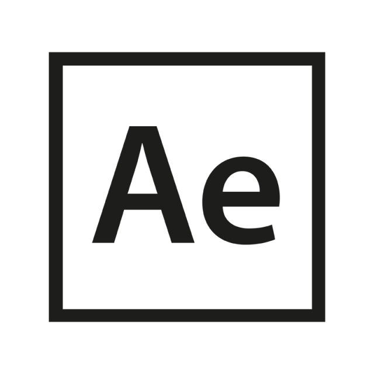

Sobre Mi
Soy una profesional de diseño gráfico y audiovisual, me apasiona el mundo tech por lo que el área front-end es un mundo inspirador y con mucho retos, me gusta la programación y creación de nuevas plataformas que faciliten la vida de la personas, estar involucrada en el desarrollo de una solución ante una problemática del mundo actual, es un desafio enriquecedor tanto por el aprendizaje adqueridos en estos proyectos como también para el desarrollo de mis habilidades humanitarias.
Mis Habilidades
El desarrollo de soft skills
Mis Herramientas



Mis Proyectos
El desarrollo de los siguientes proyectos se realizaron con el requirimiento de desarrollar mis habilidades técnicas.